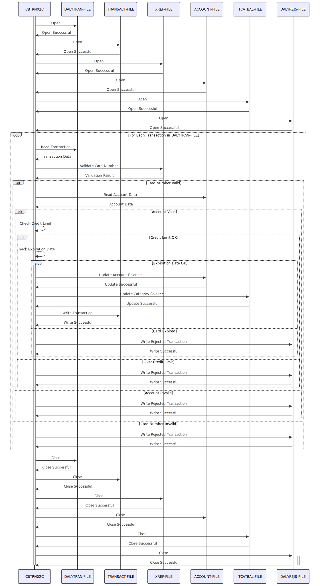

Gerado em: 1º de outubro de 2024
Descrição Resumida:
O Processador de Transações Diárias CardDemo é um programa batch COBOL que processa transações diárias de cartão de crédito de um arquivo sequencial (DALYTRAN-FILE), valida-as em relação a dados de referência cruzada e de contas, atualiza saldos de transações e contas em arquivos indexados e grava transações rejeitadas em um arquivo separado (DALYREJS-FILE) com códigos de razão.
Casos de Uso: Como analista de dados, preciso garantir que apenas transações válidas sejam usadas para análise e relatórios. O sistema deve validar automaticamente cada transação e sinalizar quaisquer transações inválidas com os códigos de razão apropriados.
Épico Relacionado:
4 - Processamento de Transações
Requisitos Técnicos:
DALYTRAN-FILE.TRANSACT-FILE com indexação por FD-TRANS-ID.DALYREJS-FILE sequencialmente.ACCOUNT-FILE indexado por FD-ACCT-ID.TCATBAL-FILE indexado por FD-TRAN-CAT-KEY.DALYTRAN-CARD-NUM) em relação a XREF-FILE.ACCOUNT-FILE.ACCT-CREDIT-LIMIT.ACCT-EXPIRAION-DATE).ACCT-CURR-BAL) em ACCOUNT-FILE.TRAN-CAT-BAL) em TCATBAL-FILE.TRAN-PROC-TS) no formato DB2-FORMAT-TS.DALYREJS-FILE com códigos de razão detalhados.ACCT-CURR-CYC-CREDIT, ACCT-CURR-CYC-DEBIT, DALYTRAN-AMT, ACCT-CREDIT-LIMIT(ACCT-CURR-CYC-CREDIT - ACCT-CURR-CYC-DEBIT + DALYTRAN-AMT) <= ACCT-CREDIT-LIMITACCT-EXPIRAION-DATE, DALYTRAN-ORIG-TSACCT-EXPIRAION-DATE >= DALYTRAN-ORIG-TS(1:10)CURRENT-DATEYYYY-MM-DD-HH.MI.SS.MS0000DB2-FORMAT-TSModelos Relacionados:
DALYTRAN-ID (String): Identificador exclusivo para cada transação diária.DALYTRAN-TYPE-CD (String): Código que indica o tipo de transação (por exemplo, compra, pagamento).DALYTRAN-CAT-CD (String): Código que categoriza a transação (por exemplo, mantimentos, combustível, entretenimento).DALYTRAN-SOURCE (String): Origem da transação (por exemplo, online, terminal POS).DALYTRAN-DESC (String): Descrição da transação.DALYTRAN-AMT (Decimal): Valor da transação.DALYTRAN-MERCHANT-ID (String): Identificador exclusivo para o comerciante envolvido na transação.DALYTRAN-MERCHANT-NAME (String): Nome do comerciante.DALYTRAN-MERCHANT-CITY (String): Cidade do comerciante.DALYTRAN-MERCHANT-ZIP (String): CEP do comerciante.DALYTRAN-CARD-NUM (String): Número do cartão de crédito usado para a transação.DALYTRAN-ORIG-TS (String): Data e hora em que a transação foi iniciada.TRAN-PROC-TS (String): Data e hora em que a transação foi processada.FD-XREF-CARD-NUM (String): Número do cartão de créditoFD-XREF-DATA (String): Dados adicionais do cartãoFD-ACCT-ID (Numérico): Identificador exclusivo da contaFD-ACCT-DATA (String): Outras informações relacionadas à contaACCT-CURR-BAL (Decimal): Saldo atual da conta.ACCT-CURR-CYC-CREDIT (Decimal): Total de créditos no ciclo atual.ACCT-CURR-CYC-DEBIT (Decimal): Total de débitos no ciclo atual.ACCT-CREDIT-LIMIT (Decimal): Limite de crédito da conta.ACCT-EXPIRATION-DATE (String): Data de expiração do cartão de crédito.FD-TRAN-CAT-KEY (String): Chave composta para o registro de saldo da categoria de transação (inclui ID da conta, código do tipo de transação e código da categoria).FD-TRANCAT-ACCT-ID (Numérico): Identificador da contaFD-TRANCAT-TYPE-CD (String): Código do tipo de transaçãoFD-TRANCAT-CD (Numérico): Código da categoria da transaçãoFD-FD-TRAN-CAT-DATA (String): Outros dados de saldo da categoria de transaçãoTRAN-CAT-BAL (Decimal): Saldo para uma categoria de transação específica.Configurações:
DALYTRAN-FILE: Caminho para o arquivo de entrada de transações diárias.TRANSACT-FILE: Caminho para o arquivo de saída de transações.XREF-FILE: Caminho para o arquivo de entrada de referência cruzada.DALYREJS-FILE: Caminho para o arquivo de saída de rejeições diárias.ACCOUNT-FILE: Caminho para o arquivo mestre da conta.TCATBAL-FILE: Caminho para o arquivo de saldo da categoria de transação.Melhorias de Código:
Melhorias de Segurança:
Diagrama Conceitual:
–Made by “Smart Engineering” (by Compass.UOL)–